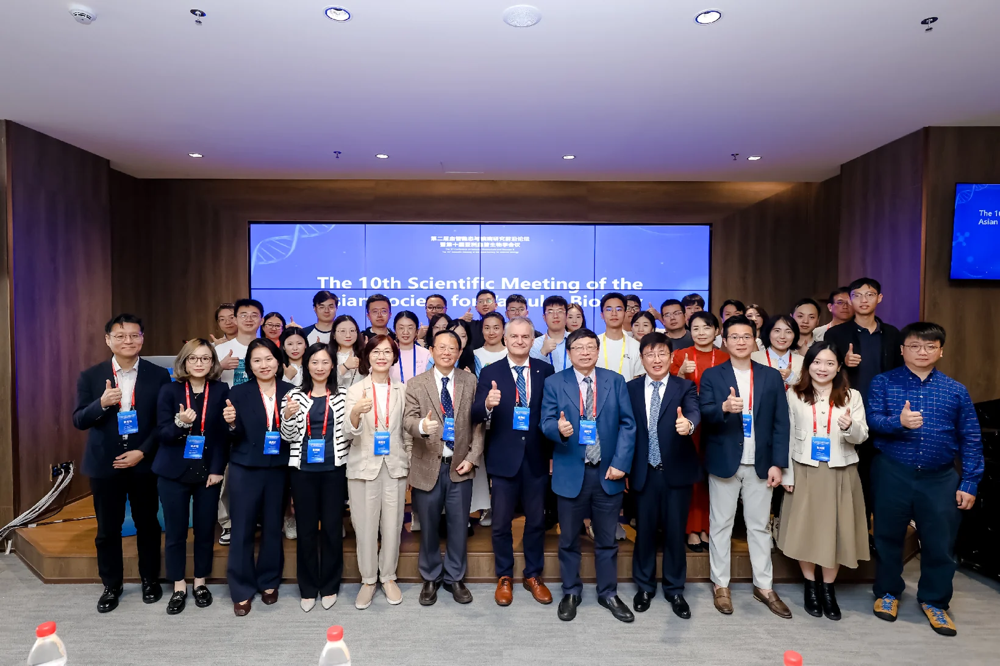

MEETING ARCHIVE
第十届学术会议
深圳 2025
2025 年 4 月 11–13 日
中国深圳

- 联合会议会场
- 3
- ASVB 专场报告
- 11
- 联合会议参会者
- ≈200
MEETING REPORT
会议回顾
第十届 ASVB 会议与第二届血管稳态与疾病研究前沿论坛在深圳联合举行，聚焦血管如何维持稳态，以及稳态失衡如何参与疾病发生。
亚洲血管生物学学会、南方科技大学医学院和南方科技大学稳态医学研究院联合主办，广东省药理学会协办，深圳市生物医药促进会承办。
血管稳态与重构
学者围绕血管稳态、血管重构和疾病发生，讨论如何将机制研究带来的线索用于疾病预防、诊断与治疗。
Tony J. F. Lee 纪念讲座
Maik Gollasch 教授讨论了血管周围脂肪组织与高血压的关系。
青年研究者交流
联合会议设青年专题报告和青年口头报告，研究者在主会场、青年会场及 ASVB 专场之间交流。